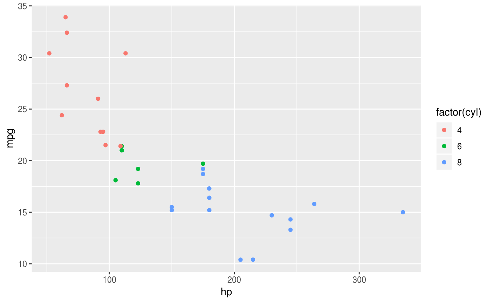
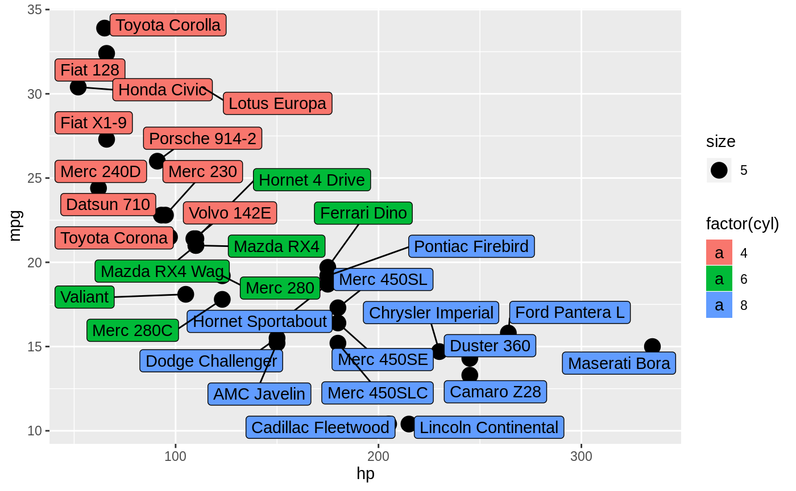
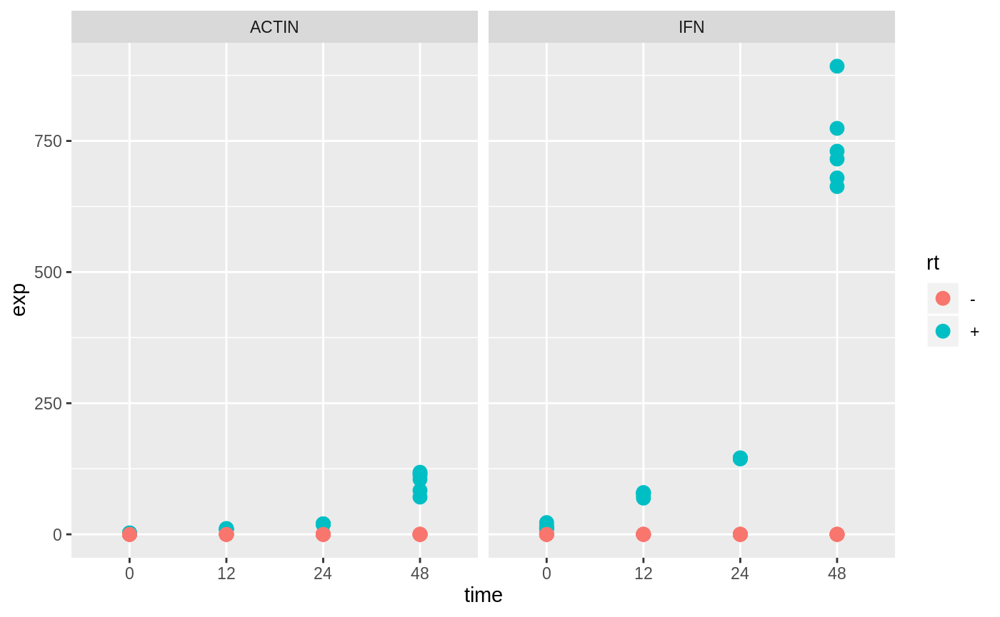

Class 1: Course Overview | Data Import and Tidying
Jay Hesselberth
2019-12-04
Source:vignettes/class-1.Rmd
class-1.RmdGoals for the course
Master the basics of data import, processing, plotting, and report generation in RStudio.
Get hooked on RStudio instead of MS Excel, Prism, etc as your go-to analysis software.
Learn productive analysis habits.
Understand the analysis ecosystem so that new types of data are easily approachable
RStudio Overview
The class has its own R package, so you should begin by loading it into your session. You will need to reinstall the package when we make updates.
Environment
The Environment panel enables data import and environment browsing.
There are two main ways to import data within RStudio. One is interactive, using the “Import Dataset” button in the Environment panel.

data import
read functions
Alternatively you can use functions in readr and readxl to load data on the console or within an RMarkdown report. All of the functions have read_* prefixes.
library(readr)
read_csv(readr_example("mtcars.csv"))
#> Parsed with column specification:
#> cols(
#> mpg = col_double(),
#> cyl = col_double(),
#> disp = col_double(),
#> hp = col_double(),
#> drat = col_double(),
#> wt = col_double(),
#> qsec = col_double(),
#> vs = col_double(),
#> am = col_double(),
#> gear = col_double(),
#> carb = col_double()
#> )
#> # A tibble: 32 x 11
#> mpg cyl disp hp drat wt qsec vs am gear carb
#> <dbl> <dbl> <dbl> <dbl> <dbl> <dbl> <dbl> <dbl> <dbl> <dbl> <dbl>
#> 1 21 6 160 110 3.9 2.62 16.5 0 1 4 4
#> 2 21 6 160 110 3.9 2.88 17.0 0 1 4 4
#> 3 22.8 4 108 93 3.85 2.32 18.6 1 1 4 1
#> 4 21.4 6 258 110 3.08 3.22 19.4 1 0 3 1
#> 5 18.7 8 360 175 3.15 3.44 17.0 0 0 3 2
#> 6 18.1 6 225 105 2.76 3.46 20.2 1 0 3 1
#> 7 14.3 8 360 245 3.21 3.57 15.8 0 0 3 4
#> 8 24.4 4 147. 62 3.69 3.19 20 1 0 4 2
#> 9 22.8 4 141. 95 3.92 3.15 22.9 1 0 4 2
#> 10 19.2 6 168. 123 3.92 3.44 18.3 1 0 4 4
#> # … with 22 more rows
library(readxl)
read_excel(readxl_example("datasets.xlsx"))
#> # A tibble: 150 x 5
#> Sepal.Length Sepal.Width Petal.Length Petal.Width Species
#> <dbl> <dbl> <dbl> <dbl> <chr>
#> 1 5.1 3.5 1.4 0.2 setosa
#> 2 4.9 3 1.4 0.2 setosa
#> 3 4.7 3.2 1.3 0.2 setosa
#> 4 4.6 3.1 1.5 0.2 setosa
#> 5 5 3.6 1.4 0.2 setosa
#> 6 5.4 3.9 1.7 0.4 setosa
#> 7 4.6 3.4 1.4 0.3 setosa
#> 8 5 3.4 1.5 0.2 setosa
#> 9 4.4 2.9 1.4 0.2 setosa
#> 10 4.9 3.1 1.5 0.1 setosa
#> # … with 140 more rowsYou can also explore your environment with the “Global Environment” button.
Console
The Console panel enables interactive analysis.
library(tidyverse)
#> ── Attaching packages ─────────────────────────────────────── tidyverse 1.3.0 ──
#> ✔ ggplot2 3.2.1 ✔ dplyr 0.8.3
#> ✔ tibble 2.1.3 ✔ stringr 1.4.0
#> ✔ tidyr 1.0.0 ✔ forcats 0.4.0
#> ✔ purrr 0.3.3
#> ── Conflicts ────────────────────────────────────────── tidyverse_conflicts() ──
#> ✖ dplyr::filter() masks stats::filter()
#> ✖ dplyr::lag() masks stats::lag()This one invocation loads several libraries including dplyr and ggplot2.
Viewer
The tidyverse contains ggplot2, which you covered in your pre-requisites. Let’s make a simple plot in RStudio. Note that the plot appears in the “Plots” panel. From there, you can Zoom, Export to a file, or Publish on RPubs.

Editor
Finally we’ll create an RMarkdown document in the Editor panel. Select File > New File > RMarkdown… and fill the Title and Author fields. Then click OK to create an RMarkdown document. When you have completed editing the document, click the “Knit” button to render the output (e.g., as an HTML page).
Rmarkdown is customizable with tables of contents, tabbed views and more. See the Rmarkdown documentation for examples.
Projects
RStudio provides a “Project” concept to keep related analyses together. I suggest starting each class by making your own project (File > New Project).
Tidyverse cheatsheets
See Help > Cheatsheets for helpful references. Print them out and pin them up next to your screen. The dplyr and ggplot2 cheatsheets are especially useful for beginners.
Git and Github
Github provides several advantages:
- Revision control. You have a history of all changes to your documents and can go back to any point.
- Collaboration. It is easy to share analyses with your colleagues and is built to enable multiple people to work an a common project.
- Publicity. Your github page reflects your interests and productivity. Others might visit to evaluate your code samples.
Jenny Bryan’s “Happy Git with R” tutorial gets you up and running by integrating Git and R Studio.
We’ll be using github to submit problem sets, so make sure this is set up by class time on Thursday.
Formatting data for efficient analysis
Reformatting your data into “tidy” format is a useful practice that allows you efficiently manipulate and analyze data. We will start with some toy examples and then will reformat a commonly used data type from a quantitative PCR experiment.
Tidy data adopts three simple conventions:
- Columns are variables.
- Rows are observations.
- Store related data in separate tables.
The tibble
A tibble is similar to a data.frame with some important differences. A tibble provides a quick overview of your data including its structure (rows and columns) and column types. Use as_tibble() to convert a data.frame:
head(iris)
#> Sepal.Length Sepal.Width Petal.Length Petal.Width Species
#> 1 5.1 3.5 1.4 0.2 setosa
#> 2 4.9 3.0 1.4 0.2 setosa
#> 3 4.7 3.2 1.3 0.2 setosa
#> 4 4.6 3.1 1.5 0.2 setosa
#> 5 5.0 3.6 1.4 0.2 setosa
#> 6 5.4 3.9 1.7 0.4 setosa
library(tidyverse)
as_tibble(iris)
#> # A tibble: 150 x 5
#> Sepal.Length Sepal.Width Petal.Length Petal.Width Species
#> <dbl> <dbl> <dbl> <dbl> <fct>
#> 1 5.1 3.5 1.4 0.2 setosa
#> 2 4.9 3 1.4 0.2 setosa
#> 3 4.7 3.2 1.3 0.2 setosa
#> 4 4.6 3.1 1.5 0.2 setosa
#> 5 5 3.6 1.4 0.2 setosa
#> 6 5.4 3.9 1.7 0.4 setosa
#> 7 4.6 3.4 1.4 0.3 setosa
#> 8 5 3.4 1.5 0.2 setosa
#> 9 4.4 2.9 1.4 0.2 setosa
#> 10 4.9 3.1 1.5 0.1 setosa
#> # … with 140 more rows
The tidyr package
The tidyr package has useful functions to format data for efficient analysis. See the cheat sheet for reference.
gather and spread
These are the workhorse functions in tidyr. Use gather when variables are in columns and you want them in tidy format.
library(pbda)
# column names in "wide" format are variables
mtcars_tbl
#> # A tibble: 32 x 12
#> name mpg cyl disp hp drat wt qsec vs am gear carb
#> <chr> <dbl> <dbl> <dbl> <dbl> <dbl> <dbl> <dbl> <dbl> <dbl> <dbl> <dbl>
#> 1 Mazda RX4 21 6 160 110 3.9 2.62 16.5 0 1 4 4
#> 2 Mazda RX4 … 21 6 160 110 3.9 2.88 17.0 0 1 4 4
#> 3 Datsun 710 22.8 4 108 93 3.85 2.32 18.6 1 1 4 1
#> 4 Hornet 4 D… 21.4 6 258 110 3.08 3.22 19.4 1 0 3 1
#> 5 Hornet Spo… 18.7 8 360 175 3.15 3.44 17.0 0 0 3 2
#> 6 Valiant 18.1 6 225 105 2.76 3.46 20.2 1 0 3 1
#> 7 Duster 360 14.3 8 360 245 3.21 3.57 15.8 0 0 3 4
#> 8 Merc 240D 24.4 4 147. 62 3.69 3.19 20 1 0 4 2
#> 9 Merc 230 22.8 4 141. 95 3.92 3.15 22.9 1 0 4 2
#> 10 Merc 280 19.2 6 168. 123 3.92 3.44 18.3 1 0 4 4
#> # … with 22 more rows
# gather variables and observations into `key` and `value` columns - so-called "long" format
xx <- mtcars_tbl %>% gather(key, value, -name)
xx
#> # A tibble: 352 x 3
#> name key value
#> <chr> <chr> <dbl>
#> 1 Mazda RX4 mpg 21
#> 2 Mazda RX4 Wag mpg 21
#> 3 Datsun 710 mpg 22.8
#> 4 Hornet 4 Drive mpg 21.4
#> 5 Hornet Sportabout mpg 18.7
#> 6 Valiant mpg 18.1
#> 7 Duster 360 mpg 14.3
#> 8 Merc 240D mpg 24.4
#> 9 Merc 230 mpg 22.8
#> 10 Merc 280 mpg 19.2
#> # … with 342 more rows
# and convert back to "wide" format
xx %>% spread(key, value)
#> # A tibble: 32 x 12
#> name am carb cyl disp drat gear hp mpg qsec vs wt
#> <chr> <dbl> <dbl> <dbl> <dbl> <dbl> <dbl> <dbl> <dbl> <dbl> <dbl> <dbl>
#> 1 AMC Javelin 0 2 8 304 3.15 3 150 15.2 17.3 0 3.44
#> 2 Cadillac F… 0 4 8 472 2.93 3 205 10.4 18.0 0 5.25
#> 3 Camaro Z28 0 4 8 350 3.73 3 245 13.3 15.4 0 3.84
#> 4 Chrysler I… 0 4 8 440 3.23 3 230 14.7 17.4 0 5.34
#> 5 Datsun 710 1 1 4 108 3.85 4 93 22.8 18.6 1 2.32
#> 6 Dodge Chal… 0 2 8 318 2.76 3 150 15.5 16.9 0 3.52
#> 7 Duster 360 0 4 8 360 3.21 3 245 14.3 15.8 0 3.57
#> 8 Ferrari Di… 1 6 6 145 3.62 5 175 19.7 15.5 0 2.77
#> 9 Fiat 128 1 1 4 78.7 4.08 4 66 32.4 19.5 1 2.2
#> 10 Fiat X1-9 1 1 4 79 4.08 4 66 27.3 18.9 1 1.94
#> # … with 22 more rowsLong format
Each form has its advantages. For example, long format makes it easy to calculate summaries:
Wide format
And wide format is useful for plotting.
library(ggrepel)
set.seed(42)
ggplot(mtcars_tbl) +
geom_point(aes(hp, mpg, size = 5)) +
geom_label_repel(aes(hp, mpg, fill = factor(cyl), label = name))
Exercise
Examine the beavers data set (beaver1 and beaver2) to identify its variables. Is it in tidy format? If not, how would you rearrange it to make it tidy?
separate and unite
separate takes a column containing multiple variables on input and returns multiple columns, each with a new variable. For example, a column with year/month/day information can be separated into invidual columns.
separate
dates
#> # A tibble: 120 x 1
#> date
#> <chr>
#> 1 1999-Feb-1
#> 2 1999-Feb-2
#> 3 1999-Feb-3
#> 4 1999-Feb-4
#> 5 1999-Feb-5
#> 6 1999-Feb-6
#> 7 1999-Feb-7
#> 8 1999-Feb-8
#> 9 1999-Feb-9
#> 10 1999-Feb-10
#> # … with 110 more rows
# separate is the inverse of unite
dates %>% separate(date, into = c('year', 'month', 'day'), sep = '-')
#> # A tibble: 120 x 3
#> year month day
#> <chr> <chr> <chr>
#> 1 1999 Feb 1
#> 2 1999 Feb 2
#> 3 1999 Feb 3
#> 4 1999 Feb 4
#> 5 1999 Feb 5
#> 6 1999 Feb 6
#> 7 1999 Feb 7
#> 8 1999 Feb 8
#> 9 1999 Feb 9
#> 10 1999 Feb 10
#> # … with 110 more rowsThe sep argument can take:
- a character (split
rep_valueusingsep = '_'intorepandvalue) - a position (split
a1usingsep = 1intoaand1)
Finally the extra and fill arguments to separate control what happens when there are too many and not enough variables.
crossing and complete
crossing is useful for generating combinations of variables in tibble format. For example, use crossing to generate combinations of experimental varaibles including sample names, gene names, reaction conditions, and replicates.
genotype <- c('wt', 'mut')
gene <- c('IFN', 'ACTIN')
time <- c(0, 12, 24, 48)
rt <- c('+', '-') # reverse transcriptase added?
rep <- 1:3
samples <- tidyr::crossing(genotype, gene, time, rep, rt)
samples
#> # A tibble: 96 x 5
#> genotype gene time rep rt
#> <chr> <chr> <dbl> <int> <chr>
#> 1 mut ACTIN 0 1 -
#> 2 mut ACTIN 0 1 +
#> 3 mut ACTIN 0 2 -
#> 4 mut ACTIN 0 2 +
#> 5 mut ACTIN 0 3 -
#> 6 mut ACTIN 0 3 +
#> 7 mut ACTIN 12 1 -
#> 8 mut ACTIN 12 1 +
#> 9 mut ACTIN 12 2 -
#> 10 mut ACTIN 12 2 +
#> # … with 86 more rowsData in the 96-well plate format.
Now we’ll use tidy data principles to analyze some qPCR data.
Many biological assays make use of the 96 (or 384) well plate. Note the similarity between the plate and a tibble: there are rows and columns, and each well contains a reaction that will generate one or more data points.

plate
Sample names
All variables should be systematically listed in your sample names, i.e. name_rep_time_RT. Systematic naming makes it easy to extract relevant information.
Take this example, where the sample names are a combination of a genotype (WT and MT), a time point (0,4,8,24 hour), and a replicate (1,2,3), separated by a hyphen.
#> # A tibble: 24 x 2
#> sample.name value
#> <chr> <int>
#> 1 MT-t0-1 71
#> 2 MT-t0-2 77
#> 3 MT-t0-3 51
#> 4 MT-t24-1 88
#> 5 MT-t24-2 50
#> 6 MT-t24-3 90
#> 7 MT-t4-1 67
#> 8 MT-t4-2 9
#> 9 MT-t4-3 84
#> 10 MT-t8-1 29
#> # … with 14 more rowsExtracting sample names
Because the samples have systematic names, it is easy to separate this information into individual columns.
sample_info <- samples %>%
tidyr::separate(
sample.name,
into = c('sample', 'hour', 'rep'),
sep = "-"
)
sample_info
#> # A tibble: 24 x 4
#> sample hour rep value
#> <chr> <chr> <chr> <int>
#> 1 MT t0 1 71
#> 2 MT t0 2 77
#> 3 MT t0 3 51
#> 4 MT t24 1 88
#> 5 MT t24 2 50
#> 6 MT t24 3 90
#> 7 MT t4 1 67
#> 8 MT t4 2 9
#> 9 MT t4 3 84
#> 10 MT t8 1 29
#> # … with 14 more rowsData manipulation
Now we can use dplyr and tidyr functions to manipulate the data.
# calculate summary statistics
sample_info %>% group_by(sample, hour) %>% summarize(mean(value))
#> # A tibble: 8 x 3
#> # Groups: sample [2]
#> sample hour `mean(value)`
#> <chr> <chr> <dbl>
#> 1 MT t0 66.3
#> 2 MT t24 76
#> 3 MT t4 53.3
#> 4 MT t8 57.3
#> 5 WT t0 28
#> 6 WT t24 69.7
#> 7 WT t4 51
#> 8 WT t8 35.7
# subtract a background value. N.B.: rearranging the table makes this calculation easy.
sample_info %>% spread(hour, value) %>% mutate(t24_norm = t24 - t0)
#> # A tibble: 6 x 7
#> sample rep t0 t24 t4 t8 t24_norm
#> <chr> <chr> <int> <int> <int> <int> <int>
#> 1 MT 1 71 88 67 29 17
#> 2 MT 2 77 50 9 78 -27
#> 3 MT 3 51 90 84 65 39
#> 4 WT 1 53 66 60 22 13
#> 5 WT 2 7 82 57 32 75
#> 6 WT 3 24 61 36 53 37qPCR data
The class library provides two related tibbles that describe a simulated qPCR experiment called qpcr_names and qpcr_data.
library(pbda)
qpcr_names
#> # A tibble: 8 x 13
#> row `1` `2` `3` `4` `5` `6` `7` `8` `9` `10` `11` `12`
#> <chr> <chr> <chr> <chr> <chr> <chr> <chr> <chr> <chr> <chr> <chr> <chr> <chr>
#> 1 A mut_0… mut_… mut_… mut_… mut_… mut_… wt_0… wt_0… wt_1… wt_2… wt_2… wt_4…
#> 2 B mut_0… mut_… mut_… mut_… mut_… mut_… wt_0… wt_0… wt_1… wt_2… wt_2… wt_4…
#> 3 C mut_0… mut_… mut_… mut_… mut_… mut_… wt_0… wt_0… wt_1… wt_2… wt_2… wt_4…
#> 4 D mut_0… mut_… mut_… mut_… mut_… mut_… wt_0… wt_0… wt_1… wt_2… wt_2… wt_4…
#> 5 E mut_0… mut_… mut_… mut_… mut_… mut_… wt_0… wt_1… wt_1… wt_2… wt_4… wt_4…
#> 6 F mut_0… mut_… mut_… mut_… mut_… mut_… wt_0… wt_1… wt_1… wt_2… wt_4… wt_4…
#> 7 G mut_0… mut_… mut_… mut_… mut_… mut_… wt_0… wt_1… wt_1… wt_2… wt_4… wt_4…
#> 8 H mut_0… mut_… mut_… mut_… mut_… mut_… wt_0… wt_1… wt_1… wt_2… wt_4… wt_4…
qpcr_data
#> # A tibble: 8 x 13
#> row `1` `2` `3` `4` `5` `6` `7` `8` `9` `10` `11` `12`
#> <chr> <dbl> <dbl> <dbl> <dbl> <dbl> <dbl> <dbl> <dbl> <dbl> <dbl> <dbl> <dbl>
#> 1 A 2.6 10.5 9.2 20 146. 83.6 2.4 10.5 10.4 19 146. 113
#> 2 B 0 0 0 0 0 0 0 0 0 0 0 0
#> 3 C 1.6 16.5 79.5 20 146. 680. 1.2 12 78 19.2 144 730.
#> 4 D 0 0 0 0 0 0 0 0 0 0 0 0
#> 5 E 2.8 11 79.5 19.8 105 663 2 9 69 19.8 71 716.
#> 6 F 0 0 0 0 0 0 0 0 0 0 0 0
#> 7 G 12 9.8 78 144 116 774 22.5 11 73.5 146. 118. 892.
#> 8 H 0 0 0 0 0 0 0 0 0 0 0 0We will use tidying concepts to prepare this data for efficient analysis and visualization.
qPCR data tidying
- Tidy
qpcr_dataandqpcr_namesinto a structure like:
#> # A tibble: 96 x 3
#> row col exp
#> <chr> <chr> <dbl>
#> 1 A 1 2.6
#> 2 B 1 0
#> 3 C 1 1.6
#> 4 D 1 0
#> 5 E 1 2.8
#> 6 F 1 0
#> 7 G 1 12
#> 8 H 1 0
#> 9 A 2 10.5
#> 10 B 2 0
#> # … with 86 more rowsSample names
- Separate variables into new columns in
qpcr_names_tidy.
#> # A tibble: 96 x 7
#> row col sample time gene rt rep
#> <chr> <chr> <chr> <chr> <chr> <chr> <chr>
#> 1 A 1 mut 0 ACTIN + 1
#> 2 B 1 mut 0 ACTIN - 1
#> 3 C 1 mut 0 ACTIN + 2
#> 4 D 1 mut 0 ACTIN - 2
#> 5 E 1 mut 0 ACTIN + 3
#> 6 F 1 mut 0 ACTIN - 3
#> 7 G 1 mut 0 IFN + 1
#> 8 H 1 mut 0 IFN - 1
#> 9 A 2 mut 0 IFN + 2
#> 10 B 2 mut 0 IFN - 2
#> # … with 86 more rowsData joining
- Join the tidied data together.
#> Joining, by = c("row", "col")
#> # A tibble: 96 x 8
#> row col sample time gene rt rep exp
#> <chr> <chr> <chr> <chr> <chr> <chr> <chr> <dbl>
#> 1 A 1 mut 0 ACTIN + 1 2.6
#> 2 B 1 mut 0 ACTIN - 1 0
#> 3 C 1 mut 0 ACTIN + 2 1.6
#> 4 D 1 mut 0 ACTIN - 2 0
#> 5 E 1 mut 0 ACTIN + 3 2.8
#> 6 F 1 mut 0 ACTIN - 3 0
#> 7 G 1 mut 0 IFN + 1 12
#> 8 H 1 mut 0 IFN - 1 0
#> 9 A 2 mut 0 IFN + 2 10.5
#> 10 B 2 mut 0 IFN - 2 0
#> # … with 86 more rowsStatistical summary
- Calculate summary statistics for each gene, cell and time point across replicates.
qpcr_tidy %>%
filter(rt == "+") %>%
group_by(sample, gene, time) %>%
summarize(mean_exp = mean(exp), var_exp = var(exp))
#> # A tibble: 16 x 5
#> # Groups: sample, gene [4]
#> sample gene time mean_exp var_exp
#> <chr> <chr> <chr> <dbl> <dbl>
#> 1 mut ACTIN 0 2.33 0.413
#> 2 mut ACTIN 12 10 0.840
#> 3 mut ACTIN 24 19.9 0.0133
#> 4 mut ACTIN 48 102. 271.
#> 5 mut IFN 0 13 9.75
#> 6 mut IFN 12 79 0.75
#> 7 mut IFN 24 145 0.75
#> 8 mut IFN 48 706. 3587.
#> 9 wt ACTIN 0 1.87 0.373
#> 10 wt ACTIN 12 10.1 1.05
#> 11 wt ACTIN 24 19.3 0.173
#> 12 wt ACTIN 48 101. 673.
#> 13 wt IFN 0 15 42.8
#> 14 wt IFN 12 73.5 20.2
#> 15 wt IFN 24 145 0.75
#> 16 wt IFN 48 780. 9633Plots
Plot the expression for each gene over time.
Calculate a fold-change for IFN over ACTIN and re-plot.

Exercises
- Tidy the
mtcarsdata set. Note that car names are rownames in the built-in data, so they need to be moved to their own column prior to tibble conversion. You can usetibble:rownames_to_column()for this purpose.
The tidied data should look something like:
#> # A tibble: 352 x 3
#> name var value
#> <chr> <chr> <dbl>
#> 1 Mazda RX4 mpg 21
#> 2 Mazda RX4 Wag mpg 21
#> 3 Datsun 710 mpg 22.8
#> 4 Hornet 4 Drive mpg 21.4
#> 5 Hornet Sportabout mpg 18.7
#> 6 Valiant mpg 18.1
#> 7 Duster 360 mpg 14.3
#> 8 Merc 240D mpg 24.4
#> 9 Merc 230 mpg 22.8
#> 10 Merc 280 mpg 19.2
#> # … with 342 more rowsFor each car in the tidy
mtcarsdata set, calculate the mean (mean()) and variance (var()) for each variable. Try usingsummarize(), andsummarize_at()orsummarize_all().Plot
mpgvscylfor themtcarsdata set. Which format should you use? The original data set, or the tidied one? Why?Using the provided
qpcrdata, plot the changes in gene expression over time. Use colors to represent genotypes and facets for the different genes. If that’s too easy, add error bars (geom_errorbar()) and connect each point with a line (geom_line()).
Too Easy?
If you found those exercises too easy, try these:
- Tidy the
anscombedata set. Your tidy data should look like:
# A tibble: 44 x 3
set x y
<chr> <dbl> <dbl>
1 1 4 4.26
2 1 5 5.68
3 1 6 7.24
4 1 7 4.82
5 1 8 6.95
6 1 9 8.81
7 1 10 8.04
8 1 11 8.33
9 1 12 10.8
10 1 13 7.58
# ... with 34 more rows- Calculate summary statistics in your tidy
anscombedata. Calculaten,mean, andvarfor eachxandyvariable in the sets. Try usingsummarize_eachfor this calculation.
Calculate the cor between x and y for each set. What do you infer from these summary statistics?
- Plot the tidy
anscombedata. Plot eachx/ypoint on separate facets for each set, and plot a smoothing line. Examine the plots. How do they compare to the summary statistics?